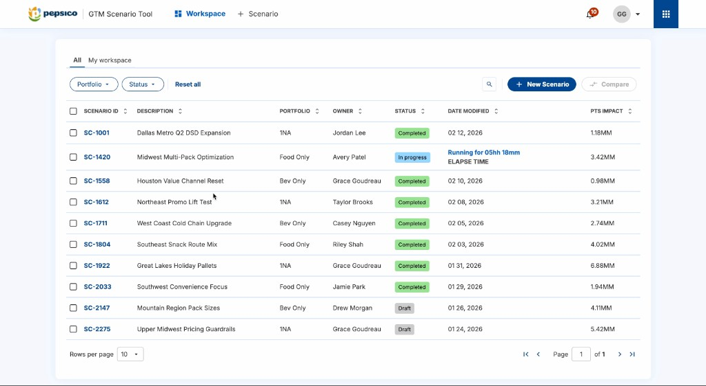

Scoping Pro · PepsiCo × Google Cloud
I designed for what the technology can do today, and built it to predict tomorrow.
Scoping Pro is PepsiCo’s profit-to-serve planning tool, built with Google Cloud to help integrate food and beverage delivery across North America. I led UX for PepsiCo: scenario inputs, baseline views and comparisons, and a coded prototype of the full flow.

In 30 seconds
Modeling the combined food and beverage delivery network took a roughly 40-tab spreadsheet and days of work.
Build today’s workspace so it scales into tomorrow’s predictive model.
The goal is predictive, but a model needs real data to train on. Phase 1 lays the groundwork and proves the foundations first.
Planning time per location went from about 3 days to under 1 hour.
The situation
Integrating two delivery networks meant planning at a level the spreadsheets couldn’t reach.
As PepsiCo brought its food and beverage businesses together, go-to-market designers had to model a combined direct-store-delivery network: stores, routes, drivers, merchandisers, fleet and P&L. Their tools were broad averages and a resource-intensive spreadsheet process that took days or weeks.
The new tool had to move from broad estimates to store- and SKU-level precision without becoming a black box. Planners still needed to inspect every assumption and judge whether a result made operational sense.
How the work moved
From a broad opportunity space to a production tool in about nine months, in partnership with Google Cloud.
The question
Every conversation came back to one question: how do we make sure what we build today scales into what this needs to become?
The ambition was predictive: a tool that suggests scenarios and flags what deserves attention. But a predictive model needs real planning runs to learn from, and planners would only trust it if they already trusted the numbers. So we designed in three horizons.
Three horizons
Define scope, review the baseline, change parameters and see the full P&L impact. AI explains finished runs in plain language.
Scenarios with an owner, status and description, every change recorded against its default, results against a baseline.
Suggested inputs and scenarios, and the markets most worth scoping, learned from real runs.
Designing for what the technology can do today
Working with Google’s engineers meant designing around real capabilities, not the demo version of them.
The routing model solves store-level schedules, so a scenario can run for minutes. Runs continue in the background with live status in the workspace, so planners keep working.
One sprint storyboard wanted the whole routing model to rerun on every change. Quick what-ifs like wages update their effects immediately; structural changes go into a full run.
The sprint’s most-voted ideas were AI features: suggested inputs, recommendation pills, AI-picked markets. The Phase 1 design includes one: a plain-language summary of each finished run.
Accuracy and attribution were open questions coming out of the sprint. The design answer was to make every result traceable to its sources of value and inputs.
Strategic decisions
AI explains today; it predicts later
ChoseAI-written summaries of finished runs, clearly labeled “Generated by AI” and placed beside the numbers they describe. Research asked for exactly that distinction.
Said no toAI-suggested inputs and recommended scenarios before the model had real runs to learn from, even though they were the sprint’s most popular ideas.
Baseline before change, defaults always visible
ChoseScope, then baseline, then parameters. Every input shows its baseline value, each category counts its changes, roles switch on and off, and “Run with default parameters” gives first-time users a result fast.
Said no toHiding baseline values behind clicks, or letting people change inputs before they’ve seen the current state.
The summary and the proof, side by side
ChoseExecutive Summary, From/To Details and Input Parameters as three views of every run, with P&L in dollars, % of net revenue and $ per case.
Said no toChoosing between an AI summary and raw tables. Research was split, so both audiences get their view.
What research changed
Five GTM designers and executives tested the sprint prototype. After the readout, I built a coded high-fidelity prototype of the full flow in about four weeks, turning findings into product behavior.
“How do I sense check it? There’s nothing here that tells me I didn’t plan a 24-hour day… It’s pure trust.”GTM designer, January 2026 research
Domain translation
A powerful model only creates value when it speaks the language of the people deciding.
My role
I bridged Google’s product ambition with PepsiCo’s enterprise reality.
I joined after the innovation workshops and led UX for PepsiCo through design and build. I designed the scenario inputs, baseline views and scenario comparisons, and translated research and strategy into behavior that fit PepsiCo’s terminology, workflows and finance conventions.
After the research readout, I built a coded prototype of the whole flow (scope, baseline, parameters, results, comparison and From/To P&L) so the joint team could review real behavior instead of static screens.
Working with Google Cloud
A design-sprint method (sketching, storyboards, success metrics defined up front), a UX designer who designed alongside me, and the cloud, data, AI and routing engineering behind the model.
How GTM teams actually plan, sanity-check and present results: the roles, the language, the finance conventions and what would make a planner trust a number.
Success defined as passing sanity checks, clear attribution and successful comparisons, and kept honest through weekly demos and bug bashes across both companies.
Demo videos and detailed workflow screens are confidential. Ask for a walkthrough.
Outcome
~3 days → under 1 hr
Planning time per location, as reported at project closeout. Analysis moved from broad estimates to store- and SKU-level precision, and formula transparency removed the black-box concern, securing trust to scale across North America. The scenario engine can now run any US market at store level.
Status: in production. Predictive guidance is the next phase.
What’s next
The sprint’s AI ideas become the roadmap, once the data can support them.
Every saved run is designed to carry its inputs, changes from the baseline, a description and its results. That growing record is what suggested inputs, recommended scenarios and opportunity discovery will learn from.
Reflection
Domain knowledge is a design capability.
In complex enterprise products, domain knowledge isn’t background context. It’s what helps a multidisciplinary team tell a technically possible solution from one people will understand, trust and defend. And designing for what the technology can do today, honestly, is what makes the ambitious version possible later.